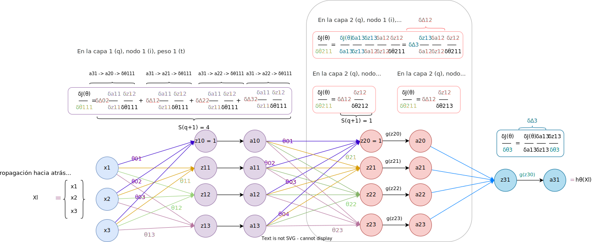

Por ejemplo, supongamos que tenemos una red con tres capas, entonces \(k=3\), dado un ejemplo \(x_j\). En este caso tenemos que
La derivada en la última capa, para el único vector de pesos \(\theta^{(3)}_1\) que tiene \(n\) elementos (features o características), es: \(\frac{\delta J(\Theta)}{\delta \theta_{1t}^{(3)}}\), para cada \(t\), \(0 \leq t \leq n\)
Como:
\begin{align} J(\Theta) = E^{(3)}(a_1^{(3)}) = E^{(3)}(g(z_1^{(3)})) = E^{(3)}(g(\Theta^{(3)}\cdot a^{(2)})) \end{align}Donde denotamos la función que calcula el error entre lo predicho y la salida real como \(E\), y \(g\) es la función de activación.
Entonces, aplicamos la regla de la cadena para cada elemento \(t\) en el vector de pesos:
\begin{align} \frac{\delta J(\Theta)}{\delta \theta_{1t}^{(3)}} = \frac{\delta J(\Theta)}{\delta a_1^{(3)}}\frac{\delta a_1^{(3)}}{\delta z_1^{(3)}}\frac{\delta z_1^{(3)}}{\delta \theta_{1t}^{(3)}} \end{align}Si vectorizamos:
\begin{align} \frac{\delta J(\Theta)}{\delta \theta_{1}^{(3)}} = \frac{\delta J(\Theta)}{\delta a_1^{(3)}}\frac{\delta a_1^{(3)}}{\delta z_1^{(3)}}\frac{\delta z_1^{(3)}}{\delta \theta_{1}^{(3)}} \end{align}Si ahora queremos obtener la derivada para uno de los vectores de pesos en la capa \(2\), volvemos a aplicar la regla de la cadena. Tenemos ahora que desestructurar la función de coste todavía más, hasta obtener la expresión que incluye las salidas de la capa \(1\), \(a^{(1)}\).
\begin{align} J(\Theta) = E^{(3)}(g(\Theta^{(3)}\cdot a^{(2)})) = E^{(3)}(g(\Theta^{(3)}\cdot g(z^{(2)}))) = E^{(3)}(g(\Theta^{(3)}\cdot g(\Theta^{(2)} \cdot a^{(1)}))) \end{align}Sea \(\Delta^{(3)}_{1j}\):
\begin{align} \Delta^{(3)}_{1j} = \frac{\delta J(\Theta)}{\delta a_{1j}^{(3)}}\frac{\delta a_{1j}^{(3)}}{\delta z_{1j}^{(3)}} \end{align}Entonces, aplicamos la regla de la cadena para cada nodo \(i\) de la capa \(2\) y para cada elemento \(t\):
\begin{align} \frac{\delta J(\Theta)}{\delta \theta_{it}^{(2)}} = \sum_{l=1}^{S_{(3)}} \Delta_{lj}^{(3)}\frac{\delta z_{lj}^{(3)}}{\delta a_{lj}^{(2)}}\frac{\delta a_{lj}^{(2)}}{\delta z_{lj}^{(2)}}\frac{\delta z_{lj}^{(2)}}{\delta \theta_{it}^{(2)}} = \Delta_{1j}^{(3)}\frac{\delta z_{1j}^{(3)}}{\delta a_{1j}^{(2)}}\frac{\delta a_{1j}^{(2)}}{\delta z_{1j}^{(2)}}\frac{\delta z_{1j}^{(2)}}{\delta \theta_{it}^{(2)}} \end{align}Si vectorizamos:
\begin{align} \frac{\delta J(\Theta)}{\delta \theta_{i}^{(2)}} = \Delta_{j}^{(3)}\frac{\delta z^{(3)}}{\delta a_{j}^{(2)}}\frac{\delta a_{j}^{(2)}}{\delta z_{j}^{(2)}}\frac{\delta z_{j}^{(2)}}{\delta \theta_{i}^{(2)}} \end{align}Para la capa \(1\), volvemos a expandir la función de coste para ver cómo aplicar la regla de la cadena:
\begin{align} J(\Theta) = E^{(3)}(g(\Theta^{(3)}\cdot g(\Theta^{(2)} \cdot a^{(1)}))) = E^{(3)}(g(\Theta^{(3)}\cdot g(\Theta^{(2)} \cdot g(z^{(1)})))) = \end{align} \begin{align} = E^{(3)}(g(\Theta^{(3)}\cdot g(\Theta^{(2)} \cdot g(\Theta^{(1)} x_j)))) \end{align}Para simplificar la notación: sea, para cada nodo \(l\) de la capa \(2\)
\begin{align} \Delta^{(2)}_{lj} = \Delta_{1j}^{(3)}\frac{\delta z_1^{(3)}}{\delta a_{lj}^{(2)}}\frac{\delta a_{lj}^{(2)}}{\delta z_{lj}^{(2)}} \end{align}Aplicamos la regla de la cadena, tal que para cada nodo \(l\) de la capa \(2\):
\begin{align} \frac{\delta J(\Theta)}{\delta \theta_{it}^{(1)}} = \sum_{l=1}^{S_{(2)}} \Delta_{lj}^{(2)}\frac{\delta z_{lj}^{(2)}}{\delta a_{lj}^{(1)}}\frac{\delta a_{lj}^{(1)}}{\delta z_{lj}^{(1)}}\frac{\delta z_{lj}^{(1)}}{\delta \theta_{it}^{(1)}} \end{align}Si vectorizamos:
\begin{align} \frac{\delta J(\Theta)}{\delta \theta_{i}^{(1)}} = \Delta_{j}^{(2)}\frac{\delta z_{j}^{(2)}}{\delta a_{j}^{(1)}}\frac{\delta a_{j}^{(1)}}{\delta z_{j}^{(1)}}\frac{\delta z_{j}^{(1)}}{\delta \theta_{i}^{(1)}} \end{align}El procedimiento se ilustra en la siguiente figura:
